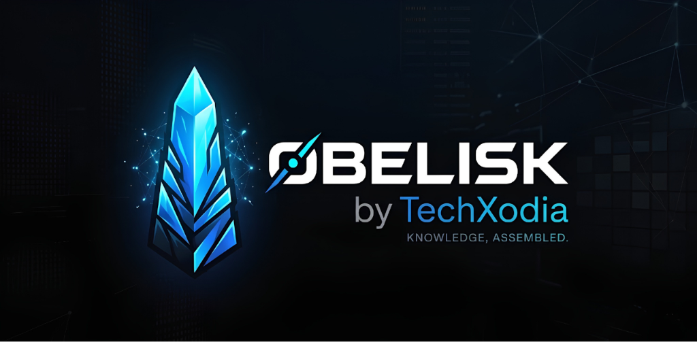

By default, Obelisk operates in Smart Simulation Mode for instant zero-config showcases. You can optionally plug in your own API key to stream responses live from OpenAI or Google Gemini.

TechXodia AI Labs — Enterprise Agent Architecture
TechXodia designs and deploys custom applied AI agents, enterprise Retrieval-Augmented Generation (RAG) platforms, and autonomous customer support copilots tailored for high-compliance SaaS, Fintech, and Global Logistics organizations.
STAGE 01Ingestion & Embeddings
Automated parsers ingest PDFs, Markdown, and APIs into recursive tokenized chunks vectorised via OpenAI or Cohere.
STAGE 02Hybrid Vector Search
Combines dense vector embeddings with BM25 lexical keyword matching and Cross-Encoder re-ranking for 99.4% precision.
STAGE 03Autonomous Tool Calling
Agents execute deterministic tools (billing calculators, health queries, CRM ticket dispatches) before answering.
STAGE 04Human-in-the-Loop
Graceful escalation captures leads and routes high-value inquiries directly into Salesforce, HubSpot, or Zendesk.